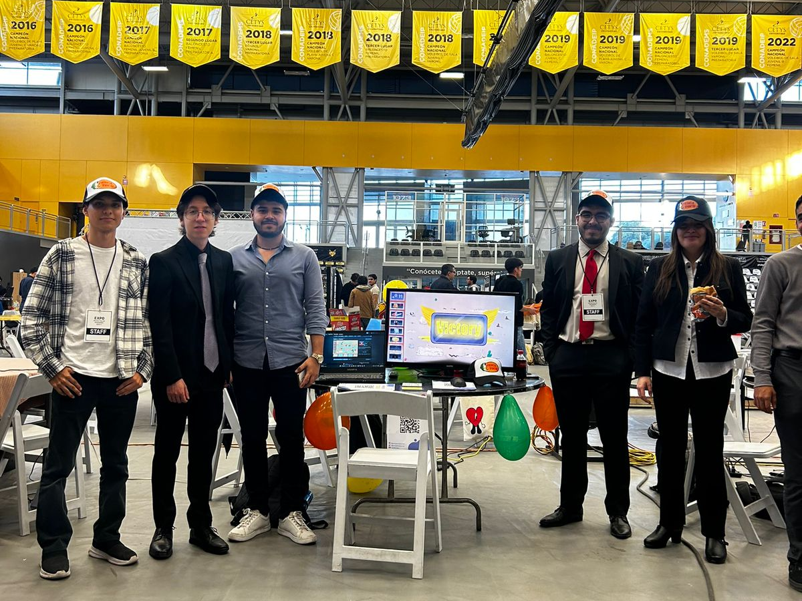
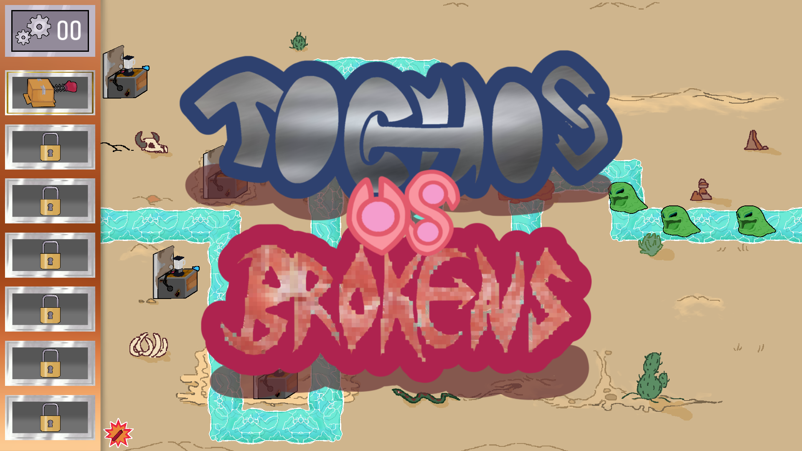
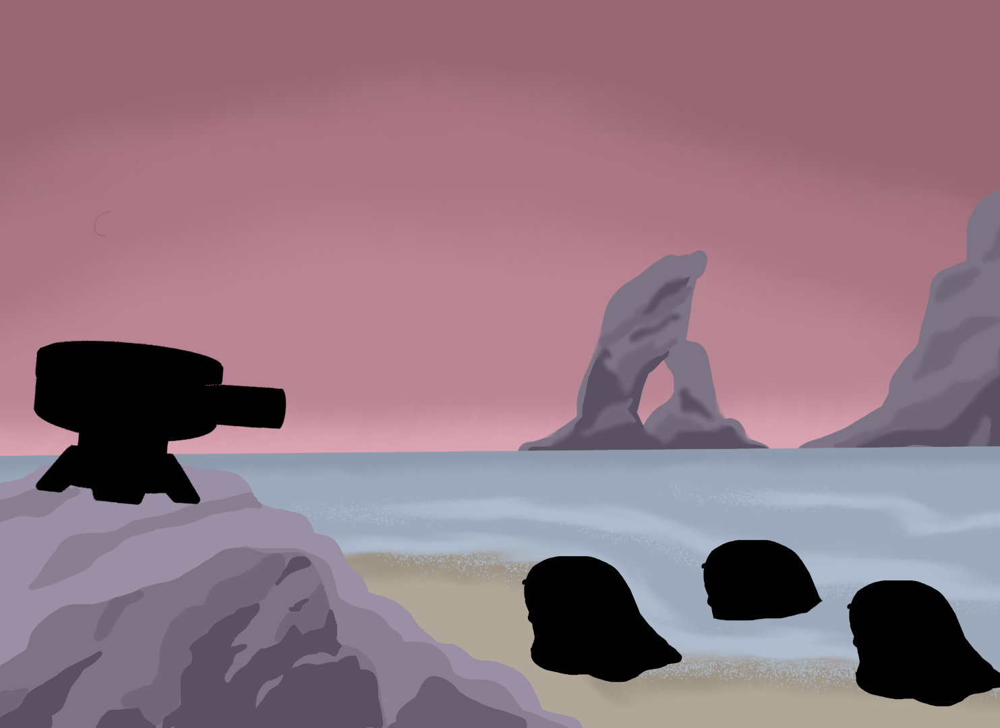

Actualización sobre Proyecto Tocho
Proyecto Tocho está de regreso, y no venimos solos.
13/7/2025
Leer más
Lanzamiento de Tochos vs. Brokens
El primer juego en Steam hecho por Proyecto Tocho esta aquí.
12/3/2024
Leer más


Nuevo juego en desarrollo
Después del éxito que fue nuestro último video juego, Pesca Tocha, el desarrollo de una tercera entrega de la saga Proyecto Tocho ha dado inicio. Habrá más información publicada en las siguientes semanas.
14/9/2023
Leer más
¡Lanzamiento del sitio web de Proyecto Tocho!
Después de meses de desarollar video juegos, hemos decidido crear una página web dedicada a la publicación de actualizaciones de nuestros futuros proyectos. También servirá como un centro para acceder a todos nuestros juegos y ver más información sobre nosotros.
13/9/2023
Leer más